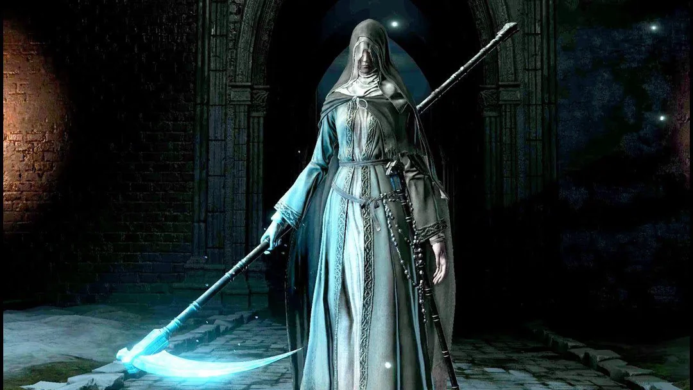

La Hermana Friede es un jefe de Dark Souls III. Es parte del DLC Cenizas de Ariandel.
La Hermana Friede está vestida con ropaje de monja y empuña una guadaña cuando lucha contra el jugador. Ella pelea sola en las fases 1 y 3, mientras que en la fase 2 pelea codo a codo con el Padre Ariandel, una figura enorme que ataca con una gran vasija. En vez de tener dos barras de vida separadas, Friede y Ariandel comparte una sola barra de vida cuando pelean juntos, convirtiendo a la fase 2 de la batalla en algo único en cuanto a mecánicas se refiere.
"Friede fue la primer Ceniza en entrar en la pintura, pero junto con el buen Padre, eligieron podredumbre por sobre fuego."
Hermana Friede: Jefe | Dark Souls III
Los jugadores pueden no tener muchas dificultades para mantenerse con vida durante la pelea, pero puede tener problemas para encontrar oportunidades para contraatacar, dada la agresividad de la que es capaz la Hermana Friede. El jugador puede invocar al Caballero Esclavo Gael como asistente, aunque él solo aparecerá luego de la fase 1. Su señal de invocación se encuentra en el mismo cuarto que la hoguera de la iglesia, a la izquierda de la escalera. Invocarlo es altamente recomendable, ya que hará que las fases 2 y 3 sean mucho más simples de superar. Debe tomarse nota de que derrotar al Príncipe Demonio en el DLC de la Ciudad Anillada antes de derrotar a Friede deshabilitará su invocación.
Luego de derrotar a Blackflame Friede, habla con el Colono Corvian cerca del Asentamiento Corvian para recibir una Losa de Titanita. Si quieres empezar el DLC de la Ciudad Anillada antes de alcanzar el Horno de la Primera Llama, matar a Friede es la única forma de lograrlo. Una hoguera especial aparecerá luego de la batalla, llevándote directo al DLC.
Hermana Friede: Ubicación | Dark Souls III
¿Dónde encontrar a la Hermana Friede en Dark Souls III? Se la puede encontrar en la Capilla de Ariandel, como un NPC no hostil. Hablar con ella antes de iniciar la batalla de jefe te otorgará el Anillo de Mordida Fría.
Hermana Friede: Drops | Dark Souls III
| Playthrough | NG | NG+ | NG++ | NG+3 | NG+4 | NG+5 | NG+6 | NG+7 |
|---|---|---|---|---|---|---|---|---|
| Solo Souls | 72000 | 144000 | 158400 | 162000 | 172800 | 176400 | 180000 | 183600 |
| Co-op Souls (1/4) | 18000 | 36000 | 36900 | 40500 | 43200 | 44100 | 45000 | 45900 |
Esta es la cantidad de Almas que obtendremos tras vencer a la Hermana Friede en los diferentes ciclos de juego, desde el New Game regular hasta NG+7.
- Otros: Alma de la Hermana Friede
- Losa de Titanita: Única vez luego de completar la segunda fase de la batalla. Puede obtenerse una vez por ciclo de juego.
Hermana Friede: Tips y Notas | Dark Souls III
- Pelea sola durantes las Fases 1 y 3 de la batalla. En la Fase 2, compartirá barra de vida y luchará codo a codo con el Padre Ariandel.
- Se puede parar.
- Los ataques de Friede causan daño Cortante o Mágico y también aplican Congelamiento.
- Friede puede ser parada y apuñalada por la espalda. Además, algunos ataques pueden aturdirla o enviarla volando.
- Durante la Fase 2, la Hermana Friede no intentará ir por golpes críticos, pero ocasionalmente intentará curar en su lugar.
- El arte de arma Estandarte de Guerra de Lothric agraviará a Friede, resultando en un uso libre de su carrera (mientras su buff esté activo), incluyendo carreras frecuentes directo al jugador, haciendo así la batalla más complicada. Esto funciona principalmente en las Fases 1 y 3; en la Fase 2 es mucho menos notable.
- Este jefe debe ser derrotado para completar el DLC.
Padre Ariandel: Tips y Notas | Dark Souls III
- Presente durante la segunda fase de la batalla. Comparte una barra de vida con la Hermana Friede.
- No se puede parar.
- Ariandel es un jefe frágil, por lo que es débil a todo tipo de daño, más notoriamente sus debilidades al Congelamiento, Hemorragia y daño de Fuego.
- Sus ataques causan daño masivo de Golpe y/o de Fuego.
- Dado su tamaño, Ariandel es un blanco sencillo para hechizos con área de efecto, como Niebla Venenosa, Niebla Tóxica y Niebla Pestilente.
- Con suficientes golpes, Ariandel puede ser aturdido, permitiendo a los jugadores realizar un golpe crítico, causando daño significativo. Su recuperación luego del ataque le permitirá al jugador asestar un par de golpes extra.
- Con Gael u otra invocación captando su enfoque, su parte trasera es completamente vulnerable a ataques.
Blackflame Friede: Tips y Notas | Dark Souls III
- Se puede parar.
- Sus ataques causan daño Cortante, Mágico, de Fuego y de Oscuridad. Aplica Congelamiento.
- Puede ser fácilmente apuñalada por la espalda.
- Con Gael u otra invicación captando su enfoque, ella es vulnerable por detrás, especialmente a puñaladas por la espalda.
Hermana Friede: Estadísticas | Dark Souls III
| Playthrough | NG | NG+ | NG++ | NG+3 | NG+4 | NG+5 | NG+6 | NG+7 |
|---|---|---|---|---|---|---|---|---|
| Vida Total Fase 1 | 4,863 | 4,868 | 5,355 | 5,598 | 5,842 | 6,328 | 6,572 | 6,815 |
| Vida Total Fase 2 | 7,150 | 7,157 | 7,872 | 8,230 | 8,588 | 9,304 | 9,662 | 10,020 |
| Vida Total Fase 3 | 6,864 | 6,871 | 7,558 | 7,901 | 8,245 | 8,932 | 9,275 | 9,619 |
| Vida Total | 18,877 | 18,896 | 20,785 | 21,729 | 22,675 | 24,564 | 25,509 | 26,454 |
| Tipo de Daño | Básico | Golpe | Cortante | Empuje | Mágico | Fuego | Rayo | Oscuridad |
|---|---|---|---|---|---|---|---|---|
| Absorciones Hermana Friede | -5% | -2% | -8% | -8% | 39% | 16% | 3% | 5% |
| Absorciones Padre Ariandel | -28% | -26% | -30% | -34% | 2% | -19% | -27% | -27% |
Hermana Friede: Guía en video | Dark Souls III
Hermana Friede

Información General
Fase 1 HP: 4,863
Fase 2 HP: 7,150
Fase 3 HP: 6,864
Souls: 72,000
Ubicación:
- Mundo Pintado de Ariandel
Drops:
- Alma de la Hermana Friede
- Losa de Titanita
Defensas
Hermana Friede
Débil:
- Golpe
Resistente:
- Todos los efectos de estado
Inmune:
- Congelamiento
Padre Ariandel

Información General
HP: 10,000
Souls: 72,000 (junto a Friede)
Ubicación:
- Mundo Pintado de Ariandel
Drops:
- Alma de Ariandel y Friede
Defensas
Padre Ariandel
Débil:
- Todos los efectos de estado
Resistente:
- Magia
Inmune:
- Ninguno